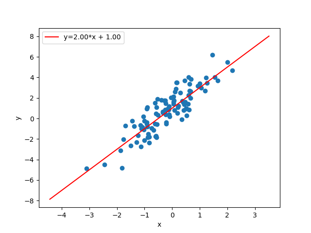
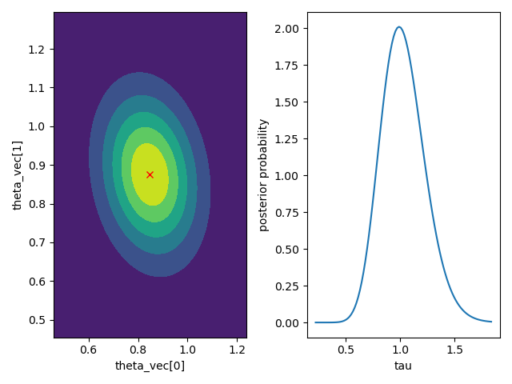

bayesml.linearregression package#
Module contents#
The Baysian Linear Regression.
The stochastic data generative model is as follows:
\(d \in \mathbb N\): a dimension
\(\boldsymbol{x} = [x_1, x_2, \dots , x_d] \in \mathbb{R}^d\): an explanatory variable. If you consider an intercept term, it should be included as one of the elements of \(\boldsymbol{x}\).
\(y\in\mathbb{R}\): an objective variable
\(\tau \in\mathbb{R}_{>0}\): a parameter
\(\boldsymbol{\theta}\in\mathbb{R}^{d}\): a parameter
The prior distribution is as follows:
\(\boldsymbol{\mu_0} \in \mathbb{R}^d\): a hyperparameter
\(\boldsymbol{\Lambda_0} \in \mathbb{R}^{d\times d}\): a hyperparameter (a positive definite matrix)
\(\alpha_0\in \mathbb{R}_{>0}\): a hyperparameter
\(\beta_0\in \mathbb{R}_{>0}\): a hyperparameter
The posterior distribution is as follows:
\(n \in \mathbb N\): a sample size
\(\boldsymbol{X} = [\boldsymbol{x}_1, \boldsymbol{x}_2, \dots , \boldsymbol{x}_n]^\top \in \mathbb{R}^{n \times d}\)
\(\boldsymbol{y} = [y_1, y_2, \dots , y_n]^\top \in \mathbb{R}^n\)
\(\boldsymbol{\mu}_n\in \mathbb{R}^d\): a hyperparameter
\(\boldsymbol{\Lambda_n} \in \mathbb{R}^{d\times d}\): a hyperparameter (a positive definite matrix)
\(\alpha_n\in \mathbb{R}_{>0}\): a hyperparameter
\(\beta_n\in \mathbb{R}_{>0}\): a hyperparameter
where the updating rules of the hyperparameters are
The predictive distribution is as follows:
\(\boldsymbol{x}_{n+1}\in \mathbb{R}^d\): a new data point
\(y_{n+1}\in \mathbb{R}\): a new objective variable
\(m_\mathrm{p}\in \mathbb{R}\): a parameter
\(\lambda_\mathrm{p}\in \mathbb{R}\): a parameter
\(\nu_\mathrm{p}\in \mathbb{R}\): a parameter
where the parameters are obtained from the hyperparameters of the posterior distribution as follows.
- class bayesml.linearregression.GenModel(c_degree, theta_vec=None, tau=1.0, h_mu_vec=None, h_lambda_mat=None, h_alpha=1.0, h_beta=1.0, seed=None)#
Bases:
GenerativeThe stochastic data generative model and the prior distribution.
- Parameters:
- c_degreeint
a positive integer.
- theta_vecnumpy ndarray, optional
a vector of real numbers, by default [0.0, 0.0, … , 0.0]
- taufloat, optional
a positive real number, by default 1.0
- h_mu_vecnumpy ndarray, optional
a vector of real numbers, by default [0.0, 0.0, … , 0.0]
- h_lambda_matnumpy ndarray, optional
a positive definate matrix, by default the identity matrix
- h_alphafloat, optional
a positive real number, by default 1.0
- h_betafloat, optional
a positive real number, by default 1.0
- seed{None, int}, optional
A seed to initialize numpy.random.default_rng(), by default None
Methods
Generate the parameter from the prior distribution.
gen_sample([sample_size, x, constant])Generate a sample from the stochastic data generative model.
Get constants of GenModel.
Get the hyperparameters of the prior distribution.
Get the parameter of the sthocastic data generative model.
load_h_params(filename)Load the hyperparameters to h_params.
load_params(filename)Load the parameters saved by
save_params.save_h_params(filename)Save the hyperparameters using python
picklemodule.save_params(filename)Save the parameters using python
picklemodule.save_sample(filename[, sample_size, x, constant])Save the generated sample as NumPy
.npzformat.set_h_params([h_mu_vec, h_lambda_mat, ...])Set the hyperparameters of the prior distribution.
set_params([theta_vec, tau])Set the parameter of the sthocastic data generative model.
visualize_model([sample_size, constant])Visualize the stochastic data generative model and generated samples.
- get_constants()#
Get constants of GenModel.
- Returns:
- constantsdict of {str: int}
"c_degree": the value ofself.c_degree
- set_h_params(h_mu_vec=None, h_lambda_mat=None, h_alpha=None, h_beta=None)#
Set the hyperparameters of the prior distribution.
- Parameters:
- h_mu_vecnumpy ndarray, optional
a vector of real numbers, by default None.
- h_lambda_matnumpy ndarray, optional
a positive definate matrix, by default None.
- h_alphafloat, optional
a positive real number, by default None.
- h_betafloat, optional
a positive real number, by default None.
- get_h_params()#
Get the hyperparameters of the prior distribution.
- Returns:
- h_paramsdict of {str: float or numpy ndarray}
"h_mu_vec": The value ofself.h_mu_vec"h_lambda_mat": The value ofself.h_lambda_mat"h_alpha": The value ofself.h_alpha"h_beta": The value ofself.h_beta
- gen_params()#
Generate the parameter from the prior distribution.
The generated vaule is set at
self.theta_vecand ``self.tau.
- set_params(theta_vec=None, tau=None)#
Set the parameter of the sthocastic data generative model.
- Parameters:
- theta_vecnumpy ndarray, optional
a vector of real numbers, by default None
- taufloat, optional, optional
a positive real number, by default None
- get_params()#
Get the parameter of the sthocastic data generative model.
- Returns:
- paramsdict of {str: float or numpy ndarray}
"theta_vec": The value ofself.theta_vec."tau": The value ofself.tau.
- gen_sample(sample_size=None, x=None, constant=True)#
Generate a sample from the stochastic data generative model.
If x is given, it will be used for explanatory variables as it is (independent of the other options: sample_size and constant).
If x is not given, it will be generated from i.i.d. standard normal distribution. The size of the generated sample is defined by sample_size. If constant is True, the last element of the generated explanatory variables will be overwritten by 1.0.
- Parameters:
- sample_sizeint, optional
A positive integer, by default
None.- xnumpy ndarray, optional
float array whose shape is
(sammple_length,c_degree), by defaultNone.- constantbool, optional
A boolean value, by default
True.
- Returns:
- xnumpy ndarray
float array whose shape is
(sammple_length,c_degree).- ynumpy ndarray
1 dimensional float array whose size is
sammple_length.
- save_sample(filename, sample_size=None, x=None, constant=True)#
Save the generated sample as NumPy
.npzformat.If x is given, it will be used for explanatory variables as it is (independent of the other options: sample_size and constant).
If x is not given, it will be generated from i.i.d. standard normal distribution. The size of the generated sample is defined by sample_size. If constant is True, the last element of the generated explanatory variables will be overwritten by 1.0.
The generated sample is saved as a NpzFile with keyword: “x”, “y”.
- Parameters:
- filenamestr
The filename to which the sample is saved.
.npzwill be appended if it isn’t there.- xnumpy ndarray, optional
float array whose shape is
(sammple_length,c_degree), by defaultNone.- sample_sizeint, optional
A positive integer, by default
None.- constantbool, optional
A boolean value, by default
True.
See also
- visualize_model(sample_size=100, constant=True)#
Visualize the stochastic data generative model and generated samples.
- Parameters:
- sample_sizeint, optional
A positive integer, by default 50
- constantbool, optional
Examples
>>> import numpy as np >>> from bayesml import linearregression >>> model = linearregression.GenModel(c_degree=2,theta_vec=np.array([2,1])) >>> model.visualize_model()
- class bayesml.linearregression.LearnModel(c_degree, h0_mu_vec=None, h0_lambda_mat=None, h0_alpha=1.0, h0_beta=1.0)#
Bases:
Posterior,PredictiveMixinThe posterior distribution and the predictive distribution.
- Parameters:
- c_degreeint
a positive integer.
- h0_mu_vecnumpy ndarray, optional
a vector of real numbers, by default [0.0, 0.0, … , 0.0]
- h0_lambda_matnumpy ndarray, optional
a positive definate matrix, by default the identity matrix
- h0_alphafloat, optional
a positive real number, by default 1.0
- h0_betafloat, optional
a positive real number, by default 1.0
- Attributes:
- hn_mu_vecnumpy ndarray
a vector of real numbers
- hn_lambda_matnumpy ndarray
a positive definate matrix
- hn_alphafloat
a positive real number
- hn_betafloat
a positive real number
- p_mfloat
a positive real number
- p_lambdafloat
a positive real number
- p_nufloat
a positive real number
Methods
Calculate log marginal likelihood
Calculate the parameters of the predictive distribution.
estimate_params([loss, dict_out])Estimate the parameter of the stochastic data generative model under the given criterion.
Get constants of LearnModel.
Get the initial values of the hyperparameters of the posterior distribution.
Get the hyperparameters of the posterior distribution.
Get the parameters of the predictive distribution.
load_h0_params(filename)Load the hyperparameters to h0_params.
load_hn_params(filename)Load the hyperparameters to hn_params.
make_prediction([loss])Predict a new data point under the given criterion.
overwrite_h0_params()Overwrite the initial values of the hyperparameters of the posterior distribution by the learned values.
pred_and_update(x, y[, loss])Predict a new data and update the posterior sequentially.
reset_hn_params()Reset the hyperparameters of the posterior distribution to their initial values.
save_h0_params(filename)Save the hyperparameters using python
picklemodule.save_hn_params(filename)Save the hyperparameters using python
picklemodule.set_h0_params([h0_mu_vec, h0_lambda_mat, ...])Set initial values of the hyperparameter of the posterior distribution.
set_hn_params([hn_mu_vec, hn_lambda_mat, ...])Set updated values of the hyperparameter of the posterior distribution.
update_posterior(x, y)Update the hyperparameters of the posterior distribution using traning data.
Visualize the posterior distribution for the parameter.
- get_constants()#
Get constants of LearnModel.
- Returns:
- constantsdict of {str: int}
"c_degree": the value ofself.c_degree
- set_h0_params(h0_mu_vec=None, h0_lambda_mat=None, h0_alpha=None, h0_beta=None)#
Set initial values of the hyperparameter of the posterior distribution.
Note that the parameters of the predictive distribution are also calculated from
self.h0_mu_vec,slef.h0_lambda_mat,self.h0_alphaandself.h0_beta.- Parameters:
- h0_mu_vecnumpy ndarray, optional
a vector of real numbers, by default None.
- h0_lambda_matnumpy ndarray, optional
a positive definate matrix, by default None.
- h0_alphafloat, optional
a positive real number, by default None.
- h0_betafloat, optional
a positive real number, by default None.
- get_h0_params()#
Get the initial values of the hyperparameters of the posterior distribution.
- Returns:
- h0_paramsdict of {str: float or numpy ndarray}
"h0_mu_vec": The value ofself.h0_mu_vec"h0_lambda_mat": The value ofself.h0_lambda_mat"h0_alpha": The value ofself.h0_alpha"h0_beta": The value ofself.h0_beta
- set_hn_params(hn_mu_vec=None, hn_lambda_mat=None, hn_alpha=None, hn_beta=None)#
Set updated values of the hyperparameter of the posterior distribution.
Note that the parameters of the predictive distribution are also calculated from
self.hn_mu_vec,slef.hn_lambda_mat,self.hn_alphaandself.hn_beta.- Parameters:
- hn_mu_vecnumpy ndarray, optional
a vector of real numbers, by default None.
- hn_lambda_matnumpy ndarray, optional
a positive definate matrix, by default None.
- hn_alphafloat, optional
a positive real number, by default None.
- hn_betafloat, optional
a positive real number, by default None.
- get_hn_params()#
Get the hyperparameters of the posterior distribution.
- Returns:
- hn_paramsdict of {str: float or numpy ndarray}
"hn_mu_vec": The value ofself.hn_mu_vec"hn_lambda_mat": The value ofself.hn_lambda_mat"hn_alpha": The value ofself.hn_alpha"hn_beta": The value ofself.hn_beta
- update_posterior(x, y)#
Update the hyperparameters of the posterior distribution using traning data.
- Parameters:
- xnumpy ndarray
float array. The size along the last dimension must conincides with the c_degree. If you want to use a constant term, it should be included in x.
- ynumpy ndarray
float array.
- estimate_params(loss='squared', dict_out=False)#
Estimate the parameter of the stochastic data generative model under the given criterion.
Note that the criterion is applied to estimating
theta_vecandtauindependently. Therefore, a tuple of the student’s t-distribution and the gamma distribution will be returned when loss=”KL”- Parameters:
- lossstr, optional
Loss function underlying the Bayes risk function, by default “squared”. This function supports “squared”, “0-1”, “abs”, and “KL”.
- dict_outbool, optional
If
True, output will be a dict, by defaultFalse.
- Returns:
- estimatestuple of {numpy ndarray, float, None, or rv_frozen}
theta_vec: the estimate for wtau_hat: the estimate for tau
The estimated values under the given loss function. If it is not exist, None will be returned. If the loss function is “KL”, the posterior distribution itself will be returned as rv_frozen object of scipy.stats.
- visualize_posterior()#
Visualize the posterior distribution for the parameter.
Examples
>>> from bayesml import linearregression >>> gen_model = linearregression.GenModel(c_degree=2,theta_vec=np.array([1,1]),tau=1.0) >>> x,y = gen_model.gen_sample(sample_size=50) >>> learn_model = linearregression.LearnModel() >>> learn_model.update_posterior(x,y) >>> learn_model.visualize_posterior()
- get_p_params()#
Get the parameters of the predictive distribution.
- Returns:
- p_paramsdict of {str: float}
"p_m": The value ofself.p_m"p_lambda": The value ofself.p_lambda"p_nu": The value ofself.p_nu
- calc_pred_dist(x)#
Calculate the parameters of the predictive distribution.
- Parameters:
- xnumpy ndarray
1 dimensional float array whose size is
self.c_degree
- make_prediction(loss='squared')#
Predict a new data point under the given criterion.
- Parameters:
- lossstr, optional
Loss function underlying the Bayes risk function, by default “squared”. This function supports “squared”, “0-1”, “abs”, and “KL”.
- Returns:
- Predicted_value{float, rv_frozen}
The predicted value under the given loss function. If the loss function is “KL”, the predictive distribution itself will be returned as rv_frozen object of scipy.stats.
- pred_and_update(x, y, loss='squared')#
Predict a new data and update the posterior sequentially.
- Parameters:
- xnumpy ndarray
1 dimensional float array whose size is
self.c_degree.- yfloat
- lossstr, optional
Loss function underlying the Bayes risk function, by default “squared”. This function supports “squared”, “0-1”, “abs”, and “KL”.
- Returns:
- Predicted_value{float, rv_frozen}
The predicted value under the given loss function. If the loss function is “KL”, the predictive distribution itself will be returned as rv_frozen object of scipy.stats.
- calc_log_marginal_likelihood()#
Calculate log marginal likelihood
- Returns:
- log_marginal_likelihoodfloat
The log marginal likelihood.